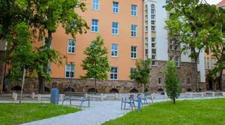

Hungary University Guide
University of Pécs
ペーチ大学｜英語で学ぶ正規留学ガイド
社会の課題と人への支援を、英語で学ぶ。文化と学生生活が身近な大学都市で、Social Workをはじめ幅広い分野の学位取得を目指す。
更新：｜写真：pecs-2026、PDF 9ページ目。ペーチ大学人文・社会科学系のキャンパス風景。公式Program Guide掲載写真。
Quick Summary
正規留学のポイント
ここで表示する現役生の人数は当サービスの相談対応者数です。大学全体・日本人全体の在学生数ではありません。学費の年度・対象は下の学費欄を確認してください。
About the University
大学と学びの特徴
ペーチ大学は、人文・社会科学、経済、理工学、医学・健康科学、芸術などを学べる総合大学です。正規留学では、自分の専攻の学部と授業場所を確認することから始めましょう。
2026–2027年版の公式Program Guideは大学全体を学生約25,000人、留学生約5,700人・146か国と紹介しています。これは資料の紹介値であり、日本人の在学生数やSH奨学生数を示すものではありません。
Rankings
大学ランキングを年度・種類ごとに見る
| ランキング・範囲 | 版の年度 | 掲載順位 | 出典・補足 |
|---|---|---|---|
| QS World University Rankings（総合） | 2027 | 791–800位 | QS公式 |
| THE World University Rankings（総合） | 2027 | 1001–1200位 | THE公式 |
| THE分野別：Social Sciences | 2026 | 801–1000位 | 社会科学分野。Social Work BA単独の順位ではありません。 公式出典 |
総合順位と分野別順位は、評価対象・指標が異なります。順位帯はそのまま表示しています。ランキングは進学先を比較する材料の一つで、入試の難易度や、特定課程の授業の質・就職を直接示す数値ではありません。
確認：2026年10月5日。2027年版ランキングと2027/28年度入学募集は別の情報です。「未確認」は今回の確認範囲で順位を確定できなかった意味であり、大学の評価が低いことを示すものではありません。数値は確認日時点の掲載情報です。
Degree Programs
英語で学べる学位課程
| 区分 | 課程の例 | 選ぶときの視点 |
|---|---|---|
| 学部 | Social Work BA | 社会福祉・社会政策・支援の実践を英語で学ぶ。 |
| 学部 | Psychology BAなど | 人文・社会科学系の別専攻。入試と学費は別条件。 |
| 修士 | Social Work MAなど | 関連学位と既修単位を確認して進学。 |
| その他 | 理工・経済・医療・芸術系の英語課程 | 専攻によって試験・実技・資格条件が異なる。 |
Social Work BA
Social Work BAは7学期の英語課程です。社会政策、心理、法律、公衆衛生と、個人・家族・地域を支援する方法を学びます。最終学期には集中的な現場実習が組み込まれているため、実習先、使用言語、受け入れ条件も進学前に質問しておくとよいでしょう。
大学公式の課程案内。全課程の一覧ではありません。
Application & Admission
出願条件と募集年度
Social Work BAは高校卒業・成績関係書類、英語CV、志望動機、動画などを求めています。英語条件にはIELTS 6.0、TOEFL iBT 72、B2証明などの選択肢と免除条件があります。面接では関心、経験、志望理由、将来の計画などが扱われます。最新の専攻ページで、書類の英訳・健康関係書類を含む提出物を確認してください。
2026年10月5日時点の募集情報
Social Work BAの公式ページは、次回開始日を2027年2月1日、出願締切を2026年11月30日と明記しています（締切時刻・タイムゾーンの記載なし）。これは2027年春入学の案内です。2027年秋入学やSH 2027/28年度の締切と混同しないようにしてください。
出典：専攻・課程の公式案内.
Tuition & Funding
学費・奨学金・留学予算
Social Workの公式掲載額（非EU学生）
| 項目 | 金額 | 対象・補足 |
|---|---|---|
| Social Work BA | 2,200 EUR／学期 | 7学期。専攻ページ・2026–2027年版資料 |
| Social Work BAの出願料 | 140 EUR | 授業料とは別 |
| Social Work MA | 2,500 EUR／学期 | 4学期。2026–2027年版資料 |
大学公式の学費・課程案内。学費は変更されることがあります。年額と学期額、授業料と出願料を区別して確認してください。
学費に加え、住居・食費・交通・保険・渡航・教材などの予算が必要です。SHを検討する場合は、希望専攻がその年度・日本向けの対象課程に含まれるか、給付内容と自己負担、出願・推薦の手順を別に確認しましょう。
Stipendium Hungaricum公式募集案内。2027/28年度の募集要項・日本側の条件は今回の確認では確定していません。
Campus Life
キャンパスと学生生活
文化施設や歴史的な街並みがあるペーチで、大学生活と日々の暮らしを組み立てられます。学部ごとにキャンパスや施設が分かれるため、同じ大学の学生でも通学動線や授業の雰囲気は異なります。
Housing
住まいと到着後の準備
大学公式のHousing案内から、学生寮と民間賃貸を比較しましょう。寮には募集・配室の条件があり、希望した部屋への入居が確約されるとは限りません。家具、共同キッチン、通学、インターネット、保証金を確認して選ぶとよいでしょう。
Finding Your Fit
この大学を検討するときの質問
社会課題、福祉、個人や地域への支援に関心がある人に適した候補です。日本での資格・就職を目指す場合は、海外の学位と日本の資格取得条件を別々に調べ、必要な手続きや追加学習も計画してください。
- 自分の希望課程の必修科目・課題・試験はどのように進むか。
- 英語力と専門科目の準備で、入学前に何を優先するか。
- 通学・寮・日々の予算は、自分の条件でどう組み立てるか。
Talk to Students
この大学の現役生に相談する
授業・試験・生活の体験を、当サービスに登録している現役生に質問できます。公式の募集条件は大学で確認し、現役生には実際に学び暮らす中での工夫や感想を聞いてみましょう。
現役生情報を読み込み中です。
Sources
公式資料・情報の確認先
記事確認日：2026年10月5日。大学の資料をもとに日本語で編集した進学ガイドです。写真は公式冊子から抽出した実際の掲載写真で、大学キャンパスを模した生成画像ではありません。各写真の資料・ページを明記しています。大学の公式案内を優先して確認してください。